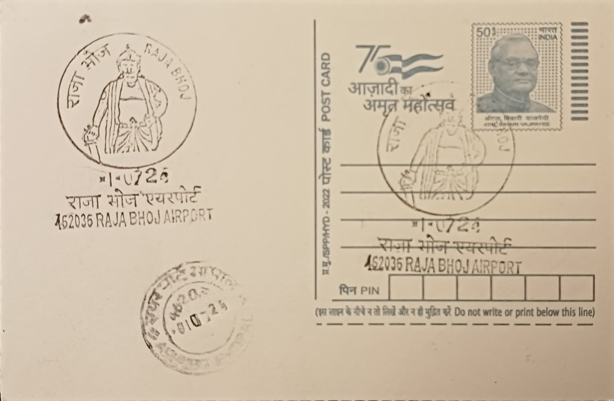

Raja Bhoj
राजा भोज


The name Raja Bhoj is inseparable from the city he is traditionally credited with founding on the banks of an artificial lake he commissioned: Bhojpal, which over centuries gave rise to the modern name Bhopal. Legend recounts that he dammed the Kolans River to create a vast reservoir, later renamed Bhojtal in his honour, around which the settlement grew. While some historians attribute the city's actual founding to a local chieftain, the association between Bhoj and Bhopal's origins is deeply embedded in regional memory, and the Raja Bhoj Airport in Bhopal, from which this post office takes its name, continues that naming tradition into the present day.
Bhoja, who reigned over the Malwa region from roughly 1010 to 1055 CE from his capital at Dhara, modern Dhar, was among the most powerful and culturally significant rulers of the Paramara dynasty. At the height of his power his territory is said to have stretched from Chittor in the north to the upper Konkan coast in the south, and from the Sabarmati river in the west to Vidisha in the east, making him one of central India's most formidable medieval monarchs. Beyond conquest, he is remembered chiefly as a patron and practitioner of learning, with Sanskrit tradition crediting him with treatises on subjects ranging from astronomy and medicine to grammar and poetics, an unusual breadth that cemented his reputation as a scholar-king rather than merely a warrior-ruler.
Among Bhoja's most significant intellectual legacies is the Samarangana Sutradhara, a treatise on architecture and Vastu Shastra attributed to him that remains one of the most cited classical Indian texts on temple design and town planning. He is also credited with establishing the Bhojshala at Dhar, a centre for Sanskrit learning and a Sarasvati temple that functioned as an institute of higher study, now a protected monument whose identity has become the subject of continuing historical and legal dispute. On the architectural front, he commissioned the Bhojeshwar Temple near present-day Bhojpur, an ambitious Shiva shrine built beside a dam-fed lake; historian Kirit Mankodi dates its construction to the later part of his reign, around the mid-eleventh century, though the structure was abandoned partway through and never completed.
The most striking physical feature of the Bhojeshwar Temple is its massive monolithic shivalinga, measuring roughly 7.5 feet in height with a circumference of about 17.8 feet, counted among the largest of its kind in India and a focal point of pilgrimage despite the temple's unfinished state. An earthen ramp used to haul stone blocks into place still survives nearby at Bhojpur, offering physical evidence of the scale of the construction effort before it was halted, reportedly amid the political upheavals and conflicts that marked the later Paramara period. Folk tradition has further woven Bhoja into popular memory through tales such as that of Raja Bhoj and Gangu Teli, which cast him as a ruler whose wisdom and fairness were tested against the shrewdness of a humble oil-presser, a story still recounted across Madhya Pradesh and neighbouring regions.
The lake Bhoja is said to have engineered, once reported to stretch some eighteen and a half miles in length before its dams were breached and rebuilt over subsequent centuries, survives today in reduced form as the Upper Lake of Bhopal, renamed Bhojtal in 2011 and still serving as the city's principal source of drinking water. His name is attached to numerous present-day institutions in the region, including Raja Bhoj International Airport, Barkatullah University's Bhoj campus references, and various government welfare and heritage schemes, while the Bhojeshwar Temple itself remains under the care of the Archaeological Survey of India as a protected monument open to visitors. Through this combination of a still-functioning lake, a working regional airport, and a monument preserved for public viewing, Bhoja's name continues to attach to the practical infrastructure of the city rather than existing only in legend.
| Date of Introduction | June 11, 2023 |
|---|---|
| Address | Sub Postmaster, |
| Raja Bhoj Airport SO, | |
| Bhopal (dt.), Madhya Pradesh - 462036. |